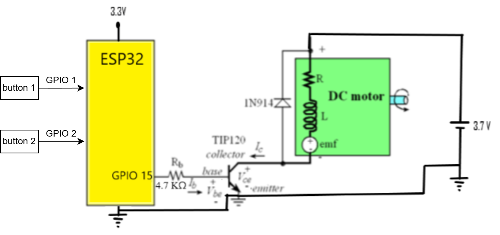

In this lab, we focus using ESP32 to create a pulse width modulation (PWM) that can be used to control the rotation speed of a small DC motor. the circuit is as show below.

The PWM signal is going to be output from a GPIO port through a resistor and transistor to DC motor. Around the DC motor, there is a diode to prevent the current from back flowing (In the vide experiment, the current still back flow to create a feedback loop that increase the speed of DC motor unstoppable). We also have 2 buttons to control the PWM duty cycle, button 1 for increase, and button 2 for decrease. Both button will trigger a interrupt to override the main loop's current duty cycle.
As shown below video, we demostrate a increase of duty cycle for the motor to turn faster.
← Back to homepage